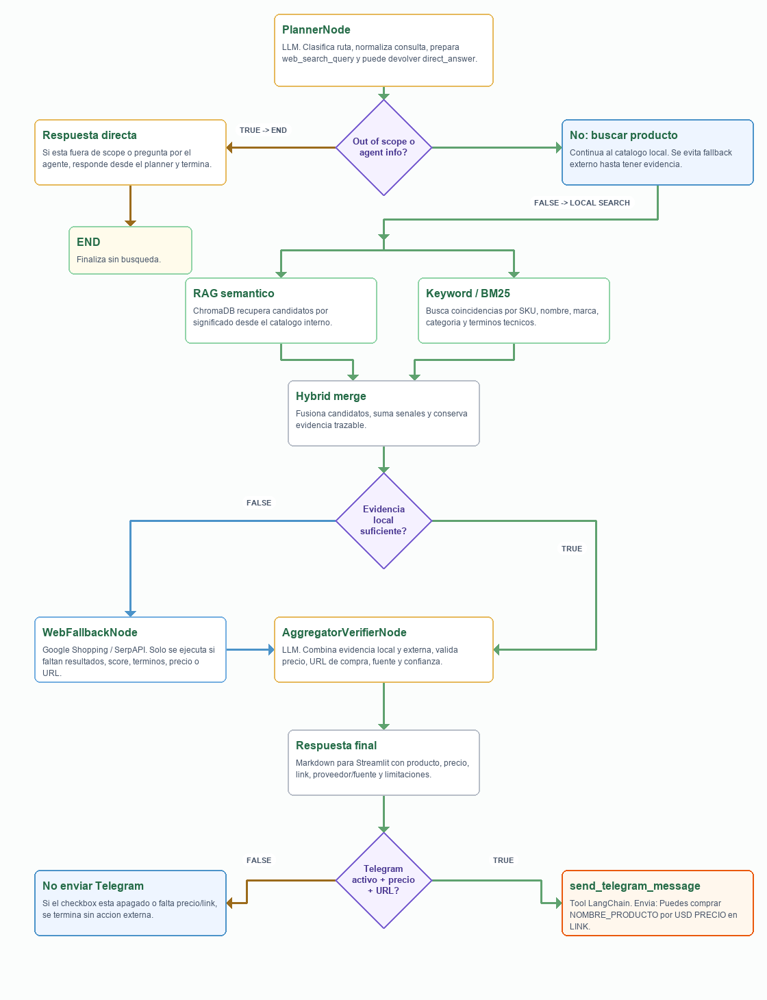
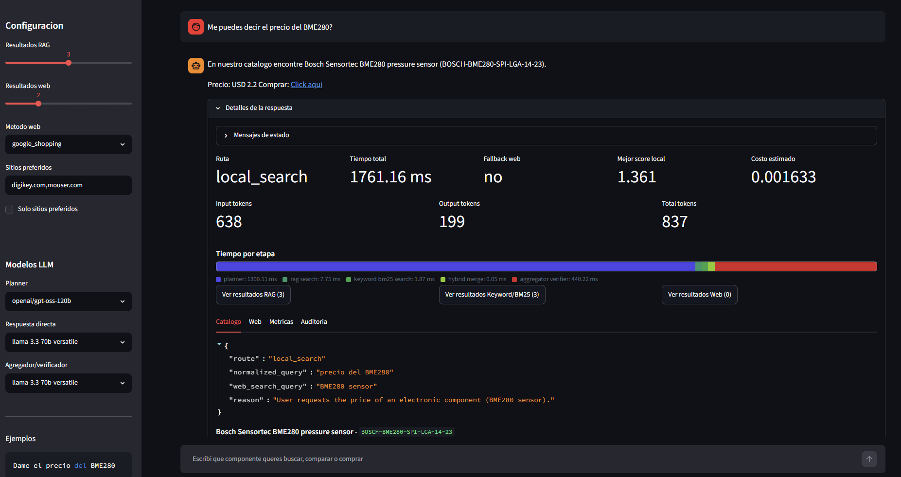

ChromaDB
Recupera candidatos semánticamente cercanos y calcula un score vectorial normalizado.
POC multiagente para responder consultas naturales con componente, precio y link de compra verificable.
Integrantes: Leandro Saraco y Kevin Cajachuán

Recupera candidatos semánticamente cercanos y calcula un score vectorial normalizado.
Refuerza SKU, part numbers, nombres exactos y términos técnicos que no conviene diluir.
Combina 65% semántico, 35% keyword y agrega bonus si un item aparece por ambas vías.
La compuerta evita que un resultado parecido pero incorrecto contamine la respuesta final. Es el puente entre retrieval y decisión de compra.
Consulta el adapter externo, normaliza resultados y conserva vendor, precio, score, snippet y URL.
Tavily, Google Shopping y Google Search mediante credenciales configurables.
Si faltan credenciales, el flujo sigue funcionando con fallback offline para validar la app.

Bloquea consultas vacías, demasiado largas, secretos, scripts y payloads peligrosos.
Clampea parámetros como top_k y web_limit para controlar costo y latencia.
Registra ruta elegida, fallback usado y métricas de cada respuesta en JSONL.

R-10K-0603-1.resistensia, stok, capasitor.Todas pasan. El reporte HTML registra además respuestas, top SKUs, ruta elegida, tokens y casos fallidos para analizar mejoras.